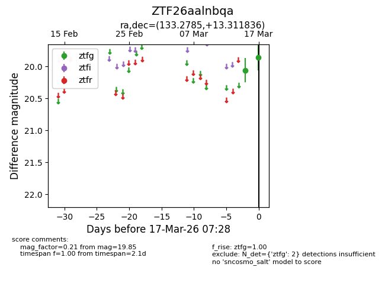
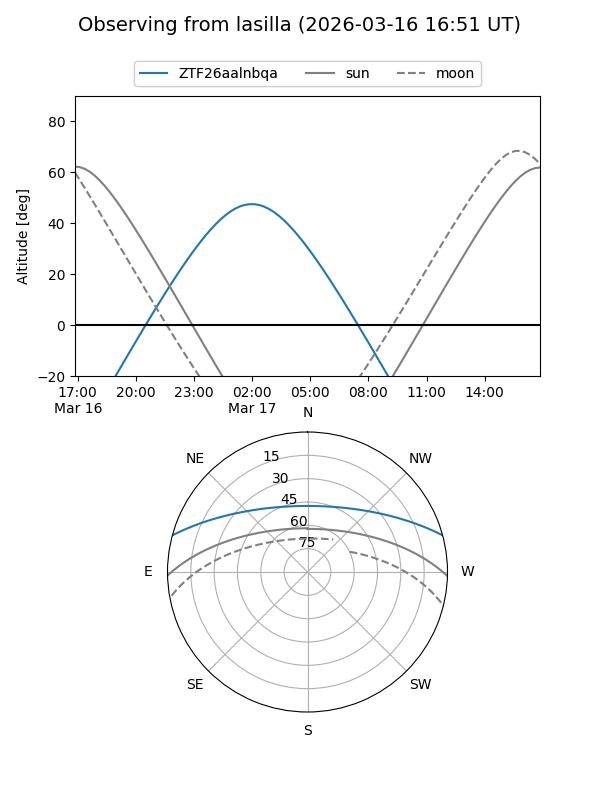
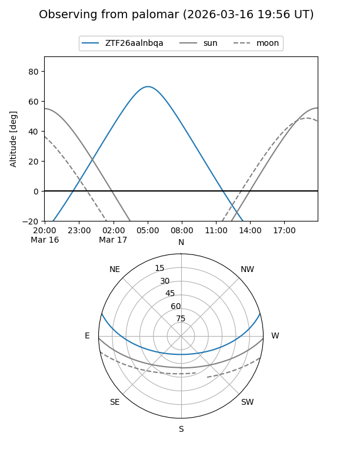
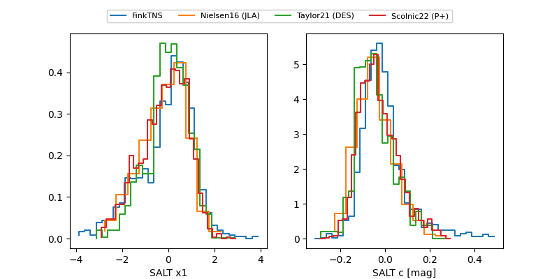

ZTF26aalnbqa
Target ZTF26aalnbqa at 2026-03-17 07:30
Aliases and brokers:
FINK: link
Lasair: link
ALeRCE: link
alt names
ZTF26aalnbqa (ztf,fink_ztf)
Coordinates:
equatorial (ra, dec) = 133.2785,+13.31184
equatorial (HMS+DMS) = 08:53:06.85,+13:18:42.61
galactic (l, b) = (214.2802,+32.92239)
Flags:
Photometry:
last ztfg=19.85
2 ztfg detections
Lightcurve

Visibility


Additional plots
